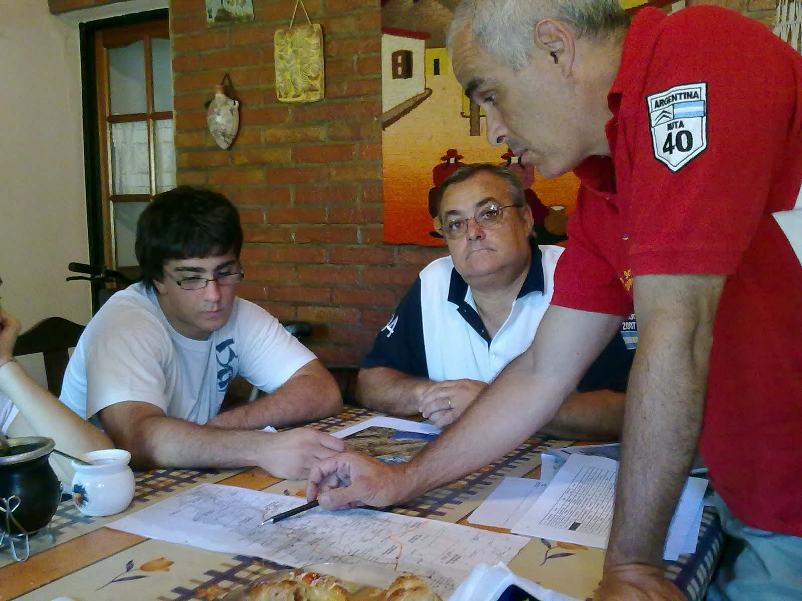

A 14 Días......
Este espacio pretende ser un relato de los acontecimientos de un grupo de personas que tienen un sueño: Recorrer la cuarenta en un 3CV por la region de Cuyo.
Antecedentes: el Old Black o All Black al mando de José Izquierdo recorriendo la 40 en el Norte Argentino. Como prueba, habrá que remitirse a la pag. 91 del Nº165 de la Revista LUGARES de enero de 2010. También en www.experiencia3cv.com.ar
Después de muchos mail de idas y vueltas la gran mayoría de los convocados, como le gusta decir a José, nos juntamos por la zona Oeste para comenzar analizar las diferentes alternativas del viaje. Es muy justo decir que esta movida lleva mucho tiempo de gestión, preparativos y previsiones. José Izquierdo (foto) alma matter y líder de este grupo, aunque a él no le guste que lo digamos, lleva mucho tiempo laburando y pensando en todos los detalles, para que ésta sea una experiencia inolvidable.
En la foto se lo ve explicando las diferentes posibilidades de alojamiento y alternativas de las maravillas que la RUTA 40 nos deparará. Como su logo lo dice "Mágica de punta a punta".
Las ansias son muchas y las ganas acompañadas de buena onda reinan en todo el equipo.
Los integrantes ya los presentaremos en las próximas entregas. Quienes son los que se ven....por ahora digamos que los sentados son el "Vasco" (famoso por ser un gran asador) y su hijo el "Vasquito".
Debemos decir que todas las fichas están puestas en los tres citroên 3cv : All Black, Mafalda y el Principito. Y a estos también los presentaremos en apartado especial!!!!. Cada uno tiene su personalidad, créanlo!!!
Por ahora eso es todo..... ya vendrá mas!!!!
Aguante los citronautas
Saludos desde Radio Décadas
Atilio